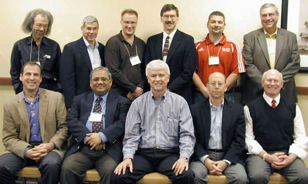

Advisory Board
CSCAP Advisory Board - 2011 Annual Conference
Top (from left): Kris Krishtalka, Jerry Hatfield, Paul Helgeson, John Kadyszewski, Mark Hamsher, David Wright
Bottom (from left): Howard Brown, Pradip Das, Jim Gulliford, Reagan Waskom, Joe Colletti
Not pictured: Thomas Dorr, Arnel Hallauer, Arlen Leholm, Gary Mast, Robin Shephard, Norman Widman
Because of the large amount of coordination and stakeholder involvement required for the project, as well as the high level of technical expertise required for the monitoring, database and modeling aspects, the project is advised by an External Advisory Board. This board consists of members with broad managerial, producer and scientific expertise on GHGs, climate modeling, physical modeling, analytical chemistry and carbon sequestration.
The board's role is to provide high-level, broad advice and to serve as a network into important stakeholder groups. The External Advisory Board meets regularly with the Executive Team. The External Advisory Board also meets with the full team at the project's annual conference.